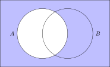

Sequent Sum Set

Sequence
A sequence is an ordered list.
It can be finite or infinite.
Sequence
A sequence is an ordered list.
\[ 0, 1, 2, 3, 4, 5, 6, ...\]
\[0, -0.1, -0.001, -0.0001 \]
\[ 1, 4, 9, 16, 25, 36 \]
\[ \frac{1}{3},\frac{2}{5},\frac{3}{7},\frac{4}{9}, ...\]
\[ 1, 4, 1, 5, 9, 2, 6, 5, ... \]
\[5, 10, 15, 20, 25, ...\]
\[5, 10, 15, 20, 25, ...\]
\[ a_1, a_2, a_3, a_4, a_5, ... \]
Formulating a Sequence
\[5, 10, 15, 20, 25, ...\]
Explicit Formula
\[a_n = 5n\]
\[n \geq 1\]
Formulating a Sequence
\[5, 10, 15, 20, 25, ...\]
Recursive Definition
\[a_1 = 5\]
\[a_n = a_{n-1} + 5\]
Exercise
Find both an explicit and recursive definition for the sequence: \[ 8, 11, 14, 17, ... \]
Exercise
Find both an explicit and recursive definition for the sequence: \[ 8, 11, 14, 17, ... \]
\[a_n = 8+3n, \quad \quad n \geq 0 \]
Exercise
Find both an explicit and recursive definition for the sequence: \[ 8, 11, 14, 17, ... \]
\[a_n = 8+3n, \quad \quad n \geq 0 \]
\[ a_1 = 8, \quad \quad a_{n+1} = a_n + 3 \]
Some famous sequences
| \(1,4,9,16,25, ...\) | The square numbers. The sequence \((s_n)_{n \geq 1}\) has closed formula \(s_n = n^2\) |
| \(1,3,6,10,15,21, ...\) | The triangular numbers. The sequence \((T_n)_{n \geq 1}\) has closed formula \(T_n = \frac{n(n+1)}{2} \) |
| \(1,2,4,8,16,32, ...\) | The powers of 2. The sequence \((a_n)_{n \geq 0}\) has closed formula \(a_n = 2^n\) |
| \(1,1,2,3,5,8,13, ...\) | The Fibonacci numbers are defined recursively by \(F_1=F_2=1\), \(F_{n} = F_{n-1}+F_{n-2}\) |
Sequence Behavior
A sequence converges
if \(a_n\) approach a single value as \(n \to \infty\) \[ 3.9, 3.99, 3.999, 3.9999, ... \]
if \(a_n\) approach a single value as \(n \to \infty\) \[ 3.9, 3.99, 3.999, 3.9999, ... \]
Sequence Behavior
A sequence converges
if \(a_n\) approach a single value as \(n \to \infty\) \[ 3.9, 3.99, 3.999, 3.9999, ... \]
if \(a_n\) approach a single value as \(n \to \infty\) \[ 3.9, 3.99, 3.999, 3.9999, ... \]
\[ \lim_{n \to \infty} a_n = 4 \]
Sequence Behavior
A sequence diverges
if it does not converge
if it does not converge
\[ 1, 2, 4, 8, 16, ... \]
Sequence Behavior
A cycle occurs when a sequence
oscillates between two or more values.
oscillates between two or more values.
\[ 4, 2, 1, 4, 2, 1, 4, ... \]
Sequence Behavior Summary
| Converge | Approach a single value |
| Diverge | Does not converge |
| Cycle | Oscillate between two or more values (special case of divergence) |
Sums
There are many applications where
we will sum a sequence.
\[ 1, 2, 4, 8, 16, 32, ... \]
Sums
There are many applications where
we will sum a sequence.
\[ 1, 2, 4, 8, 16, 32, ... \]
\[ 1 + 2 + 4 + 8 + 16 + 32 + ... \]
\(\Sigma\)-notation
\[ 1 + 2 + 4 + 8 + 16 + 32 + ... \]
\[ \sum_{n=1}^{\infty} 2^n \]
\(\Sigma\)-notation
\[ 1 + 2 + 4 + 8 + 16 + 32 + ... \]
\[ \sum_{n=0}^{\infty} 2^n = 2^{(0)} + 2^{(1)} + 2^{(2)} + 2^{(3)} + ... \]

\(\Sigma\) Examples
\[\sum_{x=4}^{6}3x^2 = 3(4)^2 + 3(5)^2 + 3(6)^2 \]
\(\Sigma\) Examples
\[\sum_{k=1}^{3} \left( 5k+2 \right) = \]
\[ \left[ 5(1)+2 \right] + \left[ 5(2)+2 \right] + \left[ 5(3)+2 \right] \]
Set
A set is an unordered collection.
Set
A set is an unordered collection.
\[\{ 1,2,3 \} = \{2,1,3\}\]
Here are some sets
\[\{ a, b, c \}\]
\[\{ 1,2,3 \}\]
\[\{ \text{eagle}, \text{elk}, \text{emu}, \text{ermine} \}\]
\[\{ \{ a, b, c \}, \{ 1,2,3 \}, \{ \text{eagle}, \text{elk}, \text{emu}, \text{ermine} \} \}\]
Statements about sets
\[A = \{1,2,3,4,5\}\]
Statements about sets
\[A = \{1,2,3,4,5\}\]
\[ |A| = 5 \]
\(A\) has cardinality \(5\)
Statements about sets
\[A = \{1,2,3,4,5\}\]
\[ 2 \in A \]
2 is an element of \(A\)
Statements about sets
\[A = \{1,2,3,4,5\}\]
\[ 0 \notin A \]
0 is NOT an element of \(A\)
Statements about sets
\(\mathcal{U}\) is the universal set
It contains all possible elements
(of whatever universe we define).
(of whatever universe we define).
Statements about sets
\[ A = \{1,2,3,4,5\} \]
\[ \mathcal{U} = \{1,2,3,4,5,6,7,8\} \]
Statements about sets
\[A = \{1,2,3,4,5\}\]
\[B = \{2,4\} \]
Statements about sets
\[A = \{1,2,3,4,5\}\]
\[B = \{2,4\} \]
\[B \subseteq A \]
\(B\) is a subset of \(A\)
Statements about sets
\[A = \{1,2,3,4,5\}\]
\[B = \{2,4\} \]
\[B \subset A \]
\(B\) is a strict subset of \(A\)
Set Operations
\[A = \{1,2,3,4\} \quad \quad B = \{3,4,5\}\]
Set Operations
\[A = \{1,2,3,4\} \quad \quad B = \{3,4,5\}\]
Union
| \[A \cup B = \{1,2,3,4,5\}\] |

|
Set Operations
\[A = \{1,2,3,4\} \quad \quad B = \{3,4,5\}\]
Intersection
| \[A \cap B = \{3,4\}\] |
|
Set Operations
\[A = \{1,2,3,4\} \quad \quad B = \{3,4,5\}\]
Complement
| \[ \bar{A} \] |  |
Set Operations
\[ A \cup \bar{A} = \]
\[ \quad \]
Set Operations
\[ A \cup \bar{A} = \mathcal{U} \]
\[ \quad \]
Set Operations
\[ A \cup \bar{A} = \mathcal{U} \]
\[ A \cap \bar{A} = \]
Set Operations
\[ A \cup \bar{A} = \mathcal{U} \]
\[ A \cap \bar{A} = \{ \text{ } \} \]
Set Operations
| \(A\) |

|
\(\bar{A}\) | |
| \( A \cup B \) |
|
\(A \cap B\) |
|
©2025 Jedediyah Williams
This work is licensed under the Creative Commons
Attribution-NonCommercial-ShareAlike 4.0 International License.

To view a copy of this license, visit https://creativecommons.org/licenses/by-nc-sa/4.0/.